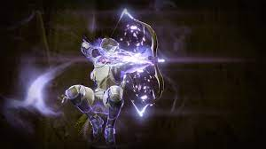
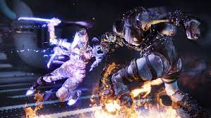

Void is considered the best subclass for Hunters because it aids in the stealthy trait of the Hunter. A Hunter that uses Void is called a Nightstalker. Using Void with a Hunter sometimes allows you to turn invisible. There are two Supers to choose from. Confine your foes with Shadowshot.  Shoot a powerful bow charged with Void, weakening and supressing them to a Void Anchor, making it much easier to defeat. Looking for some more damage? Take out your enemies from under the cover of darkness with Spectral Blades.  Summon two long knives forged from the very Void itself and turn invisible. Attack with a heavy slam, or run from enemy to enemy, silently stabbing them as you go unnoticed.
There are no melee abilities in the Nightstalker subclass. Intead, There are smoke bombs that act as the melee ability. There are three smoke bombs to choose from.
Snare Bomb - Throw a Smoke Bomb from a distance with this melee ability. The Smoke Bomb sticks to surfaces and detonates when enemies are near, slowing and disorienting them.
Corrosive Smoke - Throw a smoke bomb from a distance with this melee ability. The smoke bomb slows enemies and damages them over time.
Vanish in Smoke - Throw a Smoke Bomb from a distance with this melee ability. The Smoke Bomb creates a smoke cloud that makes you and nearby allies invisible.
There are three basic grenades to choose from.
Vortex Grenade - A grenade that creates a vortex which continually damages enemies trapped inside.
Spike Grenade - A grenade that attaches to any surface and emits a torrent of damaging Void Light.
Voidwall Grenade - A grenade that creates a horizontal wall of burning Void Light.